Wildfire¶
Import |
|
|---|---|
Actions |
Discrete & Stochastic |
Observations |
Discrete and fully Observed with private observations |
Parallel API |
Yes |
Manual Control |
No |
Agent Names |
[\(firefighter\)_0, …, \(firefighter\)_n] |
# Agents |
[0, \(n_firefighters\)] |
Action Shape |
(\(envs\), 2) |
Action Values |
[\(fight_0\), …, \(fight_{tasks}\), \(noop\) (-1)] |
Observation Shape |
TensorDict: { |
Observation Values |
self: |
Description¶
The wildfire domain simulates a grid-based environment where fires can spread and agents are tasked with extinguishing them by applying suppressant. The environment is dynamic and partially observable, with fires that can spread across adjacent tiles and vary in intensity. Fires can also burn out once they reach a certain intensity threshold.
Environment Dynamics
Fire Spread: Fires start at designated locations and spread to neighboring tiles, increasing in intensity over time. The intensity of the fire influences how much suppressant is needed to extinguish it. Fires will continue to spread until they either burn out or are controlled by agents.
Fire Intensity and Burnout: As fires spread, their intensity increases, making them harder to fight. Once a fire reaches a critical intensity, it may burn out naturally, stopping its spread and extinguishing itself. However, this is unpredictable, and timely intervention is often necessary to prevent further damage.
Suppression Mechanism: Agents apply suppressant to the fire to reduce its intensity. However, suppressant is a finite resource. When an agent runs out of suppressant, they must leave the environment to refill at a designated station before returning to continue fighting fires.
Environment Openness
agent openness: Environments where agents can dynamically enter and leave, enabling ad-hoc teamwork and multi-agent scenarios with evolving participants.
wildfire: Agents can run out of suppressant and leave the environment, removing their contributions to existing fires. Agents must reason about their collaborators leaving, or new collaborators entering.
task openness: Tasks can be introduced or removed from the environment, allowing for flexbile goal setting and adaptable planning models
wildfire: Fires can spread beyond their original starting point, requiring agents to reason about new tasks possibly entering the environment as well as a changing action space: Fires can spread beyond their original starting point, requiring agents to reason about new tasks possibly entering the environment as well as a changing action space.
frame / type openness: Different frames (e.g. agent abilities or skills) can be added, removed, or modified, expending the environmental complexity and requiring agents to infer their neighbors changing abilities.
wildfire: Agents can damage their equipment over time, and have their capabilities slowly degrade. On the other hand, agents might also recieve different equipment upon leaving the environment to resupply.
Baseline Policies¶
noop¶
Behavior
The agent takes no action in all states, effectively leaving the environment unchanged where possible. If the
environment naturally evolves regardless of the agent’s actions, the no-op policy simply observes without intervention.
Reasoning
The no-op policy serves as a baseline for understanding the impact of inaction in the environment. It highlights the
natural dynamics of the environment without any agent interference, providing a benchmark to compare active policies.
This policy is particularly useful in identifying whether external factors (e.g., environmental dynamics or other
agents) play a significant role in achieving rewards or whether deliberate actions are necessary for success.
random¶
Behavior
The agent selects actions uniformly at random from the available action space, with no regard for the state, goals, or
consequences of the actions.
Reasoning
The random policy establishes a baseline for performance in the absence of any learning or strategy. It demonstrates
the environment’s inherent difficulty by showing how likely success is when actions are chosen arbitrarily. This helps
evaluate the performance improvement of learned or more sophisticated policies over pure chance. It is especially
valuable in stochastic environments where outcomes may vary widely even with random actions.
strongest¶
Behavior
The agent prioritizes fighting fires that are closest to burning out by focusing on tiles where the fire intensity is
highest. If the agent runs out of suppressant, it leaves the environment to refill its supply before returning to resume
operations.
Reasoning
In the wildfire-fighting domain, fires with high intensity are closer to reaching a tipping point where they can either
burn out naturally or intensify the spread to adjacent tiles. The strongest policy aims to strategically intervene by
suppressing these critical fires before they can escalate or self-extinguish. By targeting fires on the brink of burning
out, the agent maximizes its suppressant efficiency, potentially stabilizing the environment faster.
The policy’s refill mechanism ensures the agent is always operational and avoids remaining idle when suppressant is depleted. This behavior is crucial in scenarios where a delay in response could allow the fire to spread unchecked. The strongest policy provides a benchmark for evaluating whether focusing on critical fires (as opposed to uniformly suppressing all fires or prioritizing larger ones) is an effective strategy in mitigating the wildfire’s overall impact.
weakest¶
Behavior
The agent prioritizes fighting fires with the lowest intensity, focusing on tiles where the fire is closest to being
extinguished. If the agent runs out of suppressant, it leaves the environment to refill its supply before returning to
continue firefighting operations.
Reasoning
In the wildfire-fighting domain, extinguishing fires provides rewards, making it advantageous to target fires that are
closest to being put out. The weakest policy aims to harvest these rewards efficiently by allocating suppressant to
low-intensity fires, which require fewer resources to extinguish.
This strategy leverages the fact that fires close to extinguishment offer a high probability of success with minimal effort. By concentrating on these easier targets, the agent maximizes short-term rewards while avoiding the risk of wasting suppressant on more challenging, high-intensity fires. The refill mechanism ensures the agent remains operational and ready to capitalize on emerging opportunities.
The weakest policy serves as a benchmark for evaluating reward-focused strategies, contrasting with other policies that might prioritize long-term stability or overall fire suppression. It highlights the trade-offs between immediate rewards and broader control of the environment.
Usage¶
Parallel API¶
from free_range_zoo.envs import space_invaders_v2
main_logger = logging.getLogger(__name__)
# Initialize and reset environment to initial state
env = space_invaders_v2.parallel_env(render_mode="human")
observations, infos = env.reset()
# Initialize agents and give initial observations
agents = []
cumulative_rewards = {agent: 0 for agent in env.agents}
current_step = 0
while not torch.all(env.finished):
agent_actions = {
agent_name: torch.stack([agents[agent_name].act()])
for agent_name in env.agents
} # Policy action determination here
observations, rewards, terminations, truncations, infos = env.step(agent_actions)
rewards = {agent_name: rewards[agent_name].item() for agent_name in env.agents}
for agent_name, agent in agents.items():
agent.observe(observations[agent_name][0]) # Policy observation processing here
cumulative_rewards[agent_name] += rewards[agent_name]
main_logger.info(f"Step {current_step}: {rewards}")
current_step += 1
env.close()
AEC API¶
from free_range_zoo.envs import wildfire_v0
main_logger = logging.getLogger(__name__)
# Initialize and reset environment to initial state
env = wildfire_v0.parallel_env(render_mode="human")
observations, infos = env.reset()
# Initialize agents and give initial observations
agents = []
cumulative_rewards = {agent: 0 for agent in env.agents}
current_step = 0
while not torch.all(env.finished):
for agent in env.agent_iter():
observations, rewards, terminations, truncations, infos = env.last()
# Policy action determination here
action = env.action_space(agent).sample()
env.step(action)
rewards = {agent: rewards[agent].item() for agent in env.agents}
cumulative_rewards[agent] += rewards[agent]
current_step += 1
main_logger.info(f"Step {current_step}: {rewards}")
env.close()
Configuration¶
- class free_range_zoo.envs.wildfire.env.structures.configuration.AgentConfiguration(agents: torch.IntTensor, fire_reduction_power: torch.FloatTensor, attack_range: torch.Tensor, suppressant_states: int, initial_suppressant: int, suppressant_decrease_probability: float, suppressant_refill_probability: float, initial_equipment_state: int, equipment_states: torch.FlaotTensor, repair_probability: float, degrade_probability: float, critical_error_probability: float, initial_capacity: int, tank_switch_probability: float, possible_capacities: torch.Tensor, capacity_probabilities: torch.Tensor)[source]¶
Setting for configuring agent properties in the environment.
- General Attributes:
agents: torch.IntTensor - Tensor representing the location of each agent fire_reduction_power: torch.FloatTensor - Power of each agent to reduce the fire intensity attack_range: torch.Tensor - Range of attack for each agent
- Suppressant Attributes:
suppressant_states: int - Number of suppressant states initial_suppressant: int - Initial suppressant value for each agent suppressant_decrease_probability: float - Probability of suppressant decrease suppressant_refill_probability: float - Probability of suppressant refill
- Equipment Attributes:
intial_equipment_state: int - Initial equipment state for each agent equipment_states: torch.FloatTensor - Definition of equipment states modifiers in the form of (capacity, power, range) repair_probability: float - Probability that an agent get their repaired equipment once fully damaged degrade_probability: float - Probability that an agent’s tank will degrade critical_error_probability: float - Probability that an agent at full will suffer a critical error
- Suppressant Tank Attributes:
tank_switch_probability: float - Probability that an agent will be supplied with a different tank on refill possible_capacities: torch.Tensor - Possible maximum suppressant values capacity_probabilities: torch.Tensor - Probability that each suppressant maximum is chosen
- Calculated Attributes:
num_agents: int - Number of agents max_fire_reduction_power: float - Maximum fire reduction power of the agents num_equipment_states: int - Number of equipment states
- class free_range_zoo.envs.wildfire.env.structures.configuration.FireConfiguration(fire_types: IntTensor, num_fire_states: int, lit: Tensor, intensity_increase_probability: float, intensity_decrease_probability: float, extra_power_decrease_bonus: float, burnout_probability: float, base_spread_rate: float, max_spread_rate: float, random_ignition_probability: float, cell_size: float, wind_direction: float, ignition_temp: IntTensor, initial_fuel: int)[source]¶
Setting for configuring fire properties in the environment.
- General Attributes:
fire_types: torch.Tensor - Required attack power in order to extinguish the fire num_fire_states: int - Number of fire states lit: torch.IntTensor - Tensor representing the initially lit tiles intensity_increase_probability: float - Probability of fire intensity increase intensity_decrease_probability: float - Probability of fire intensity decrease extra_power_decrease_bonus: float - Additional decrease bonus per extra power burnout_probability: float - Probability of fire burnout
- Fire Spreads Attributes:
base_spread_rate: float - Base spread rate of the fire max_spread_rate: float - Maximum spread rate of the fire random_ignition_probability: float - Probability of random ignition cell_size: float - Size of each cell wind_direction: float - Direction of the wind (radians) ignition_temp: torch.IntTensor - Initial intensity of each fire once ignited initial_fuel: int - Initial fuel value of each cell in the grid, controls the number of re-ignitions
- Calculated Attributes:
realistic_burnout_probability: float - Burnout probability with realistic spread rates burned_out: int - Burned out fire state almost_burned_out: int - Almost burned out fire state max_fire_type: int - Maximum fire type realistic_spread_rates: List[float] - Spread rates in each direction calculated with wind direction
- class free_range_zoo.envs.wildfire.env.structures.configuration.RewardConfiguration(fire_rewards: FloatTensor, bad_attack_penalty: float, burnout_penalty: float, termination_reward: float)[source]¶
Settings for configuring the reward function.
fire_rewards: torch.FloatTensor - Reward for extinguishing a fire bad_attack_penalty: float - Penalty for attacking a tile that is not on fire burnout_penalty: float - Penalty for attacking a burned out fire termination_reward: float - Reward for terminating the environment
- class free_range_zoo.envs.wildfire.env.structures.configuration.StochasticConfiguration(special_burnout_probability: bool, suppressant_refill: bool, suppressant_decrease: bool, tank_switch: bool, critical_error: bool, degrade: bool, repair: bool, fire_increase: bool, fire_decrease: bool, fire_spread: bool, realistic_fire_spread: bool, random_fire_ignition: bool, fire_fuel: bool)[source]¶
Configuration for the stochastic elements of the environment.
- General Fire Attributes:
special_burnout_probability: bool - Whether to use special burnout probabilities
- Stochastic Suppressant Attributes:
suppressant_refill: bool - Whether suppressants refill stochastically suppressant_decrease: bool - Whether suppressants decrease stochastically
- Stochastic Equipment Attributes:
tank_switch: bool - Whether to use stochastic tank switching critical_error: bool - Whether equipment state can have a critical error degrade: bool - Whether equipment state stochastically degrades repair: bool - Whether equipment state stochastically repairs
- Stochastic Fire Attributes:
fire_decrease: bool - Whether fires decrease stochastically fire_increase: bool - Whether fires increase stochastically fire_spread: bool - Whether fires spread realistic_fire_spread: bool - Whether fires spread realistically random_fire_ignition: bool - Whether fires can ignite randomly fire_fuel: bool - Whether fires consume fuel and have limited ignitions
- class free_range_zoo.envs.wildfire.env.structures.configuration.WildfireConfiguration(grid_width: int, grid_height: int, fire_config: FireConfiguration, agent_config: AgentConfiguration, reward_config: RewardConfiguration, stochastic_config: StochasticConfiguration)[source]¶
Configuration for the wildfire environment.
- Variables:
grid_width (int) – int - Width of the grid
grid_height (int) – int - Height of the grid
- Configuration Attributes:
fire_configuration: FireConfiguration - Configuration for the fire properties agent_configuration: AgentConfiguration - Configuration for the agent properties reward_configuration: RewardConfiguration - Configuration for the environment rewards stochastic_configuration: StochasticConf - Configuration for the stochastic elements
API¶
- class free_range_zoo.envs.wildfire.env.wildfire.env(wrappers: List[Callable], **kwargs)[source]¶
AEC wrapped version of the wildfire environment.
- Parameters:
wrappers – List[Callable[[BatchedAECEnv], BatchedAECEnv]] - the wrappers to apply to the environment
- Returns:
BatchedAECEnv – the AEC wrapped wildfire environment
- class free_range_zoo.envs.wildfire.env.wildfire.raw_env(*args, observe_other_suppressant: bool = True, observe_other_power: bool = True, show_bad_actions: bool = True, **kwargs)[source]¶
Environment definition for the wildfire environment.
Initialize the Wildfire environment.
- Parameters:
observe_others_suppressant – bool - whether to observe the suppressant of other agents
observe_other_power – bool - whether to observe the power of other agents
show_bad_actions – bool - whether to show bad actions